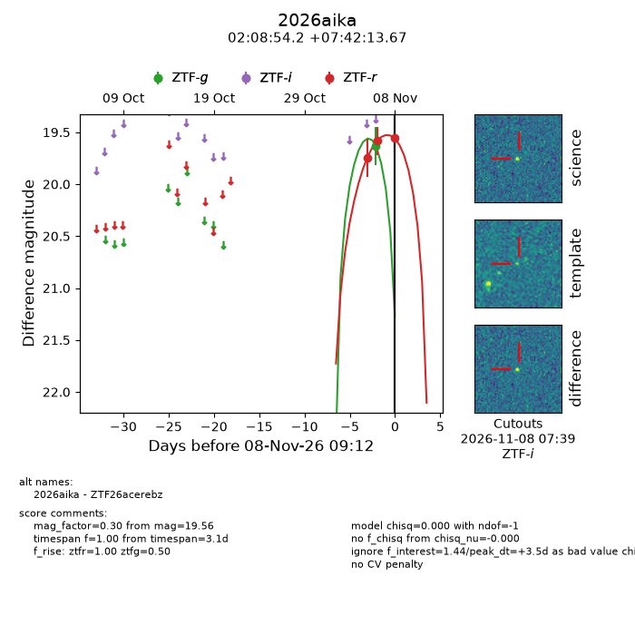
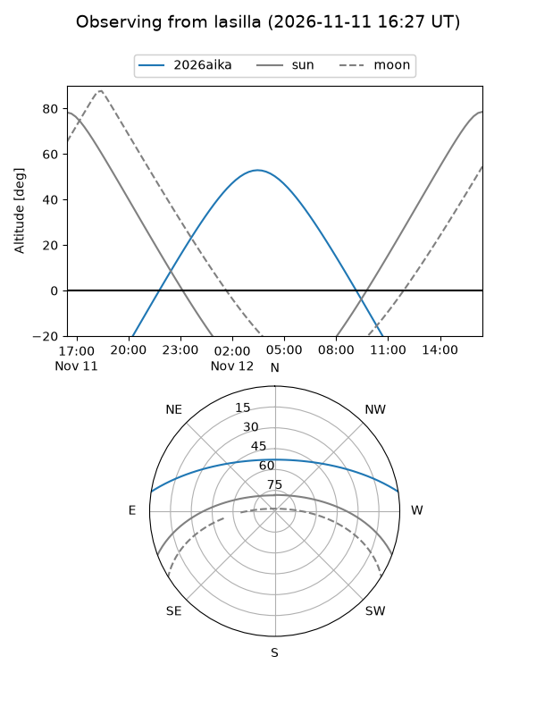
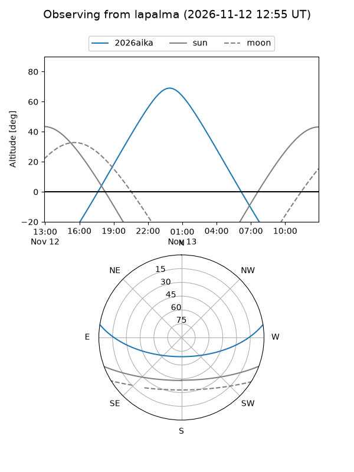
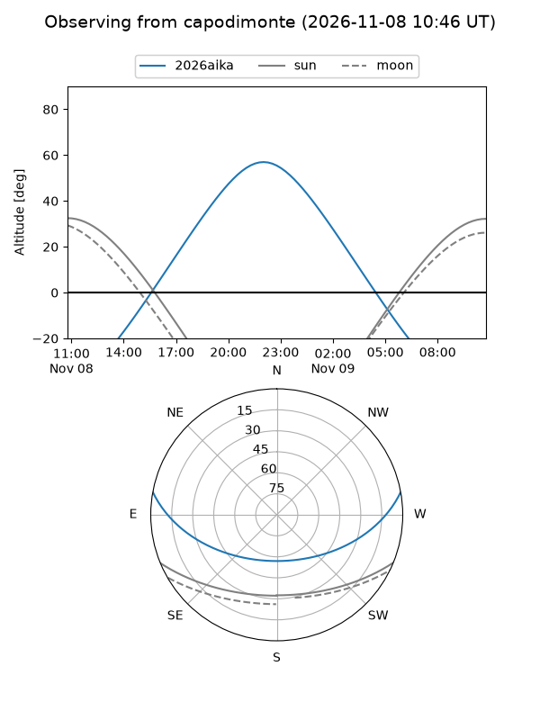
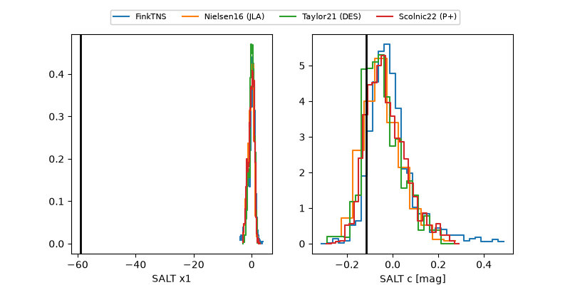

2026aika
Target 2026aika at 2026-11-08 09:14
Aliases and brokers:
FINK-ZTF: ztf.fink-portal.org/ZTF26acerebz
Lasair-ZTF: lasair-ztf.lsst.ac.uk/objects/ZTF26acerebz
ALeRCE-ZTF: alerce.online/object/ZTF26acerebz
YSE-PZ: ziggy.ucolick.org/yse/transient_detail/2026aika
TNS name: wis-tns.org/object/2026aika
Direct TNS query: direct search
alt names
ZTF26acerebz (ztf,fink_ztf)
2026aika (tns,yse)
Coordinates:
equatorial (ra, dec) = 32.2257,+7.70380
equatorial (HMS+DMS) = 02:08:54.16,+07:42:13.67
galactic (l, b) = (153.9920,-50.43725)
Flags:
peak dt: +3.5
Photometry:
last ztfg=19.63, ztfr=19.56
1 ztfg, 3 ztfr detections
Lightcurve

Visibility



Additional plots
